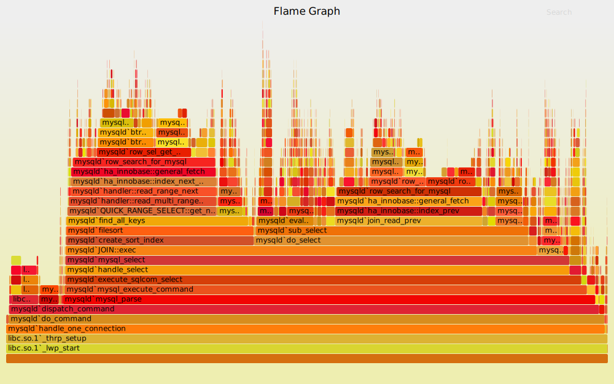

M3: 系统调用 Profiler (sperf)
1. 背景
很多能够观察状态机执行的工具：gdb (step/stepi 单步执行)、strace (查看系统调用)。
在这个实验中，使用课堂上学过的进程管理 API，去启动一个这样的工具，并获得它们的输出。具体而言，你可以实现一个属于自己的系统调用 profiler，甚至可以和图形界面里的一样 cool：

1.1. Trace 工具
Trace 工具是系统编程时非常常用的问题诊断工具。trace 反应了程序执行的流程，因此可以帮助你缩小 bug 所在的范围 (调试的目标是找到第一个发生 error 的程序状态)；此外，trace 中额外的信息还能帮助诊断性能等问题 (例如你的程序是否在某个系统调用上花去了大量的时间)。除了我们熟知的 strace, ltrace，其实 trace 广泛地存在于计算机系统的各个层面上：
- 操作系统内核 (例如 Linux) 提供了多种 trace 机制，有兴趣的同学可以参考 ftrace；
- 浏览器的开发者模式 (F12 控制台，想必大家已经用它查看过课程网站的 slides 是如何实现的了) 中，能够 trace 网络等请求——别小看它，这也是一种 trace！而且它对调试网站的功能性问题和性能问题都是至关重要的；
- 通过 Java Virtual Machine Tool Interface (JVMTI) 在 Java 虚拟机中创建 agent，收集程序执行的信息。
在 trace 的基础上，我们实现程序的性能诊断工具 (虽然 strace 的设计意图本身并不主要是为了诊断性能问题)，它能够帮助你找到程序运行时耗时最多的那些系统调用，从而找到程序的性能瓶颈。Profiler 能够提供系统性能分析的报告——而且这件事一点也不难，我们只要分析 trace 的输出就可以了。使用适当的工具，甚至可以根据 trace 的结果输出一个可交互的 Flame Graph:

Flame graph 是诊断性能问题的利器。
2. 实验描述
实现命令行工具 sperf：
sperf COMMAND [ARG]...
它会在系统中执行 COMMAND 命令 (如果 COMMAND 是以 / 开头的绝对路径，则直接执行；否则在 PATH 环境变量中搜索到第一个存在且可执行的文件)，并为 COMMAND 传入 ARG 参数 (列表)，然后统计命令执行的系统调用所占的时间。例如执行 sperf find / 会在系统中执行 find /，并且在屏幕上显示出耗时最多的若干系统调用的时间。
一些假设和约定：
- 输出的形式不限。对于较短时间运行的程序，你可以一次性打印出耗时最多的几个系统调用；对于耗时较长的程序，你需要定期 (如每秒) 打印出系统调用的耗时信息；
- 假设
COMMAND是单进程、单线程的，无需处理多进程 (fork) 和多线程 (clone/pthread_create) 的情况；虽然 strace 明确支持多进程/多线程程序。 - 作为对大家的考验，必须使用 execve 系统调用；使用 glibc 对 execve 的包装 (execl, execlp, execle, execv, execvp, execvpe) 将导致编译错误，但我们鼓励你阅读后者的手册。
只允许用 execve？
在终端里，我们输入 “strace” 以后，为什么
/usr/bin/strace会被找到执行？为什么输入a.out当前目录下的a.out不会被执行 (必须要./a.out?) 路径的解析是通过PATH环境变量实现的，如果执行命令，会逐个尝试PATH环境变量中的路径，直到找不到后才失败。在这个实验里，为了强迫大家理解环境变量，我们设置了两个坑：
- 必须使用 execve，并且 strace 的可执行文件并不位于
/usr/bin，但它的确在PATH环境变量中的某个目录中。因此如果你直接execve("/usr/bin/strace", ...)将会失败；- 必须正确处理传递给子进程的环境变量，否则将在 hard test 发生 Wrong Answer。
3. 正确性标准
判定正确性：
- 至少输出耗时 top 5 的系统调用、每个系统调用至多输出一次 (在屏幕上统一位置覆盖算输出多次)；
- 输出系统调用在 strace 输出中的小写名字、在系统调用耗时比例的左右写上小括号，按照 “
(XX%)”，即printf("(%d%%)", ratio)的格式输出系统调用耗时所占的百分比； - 除了系统调用的名字和耗时以外，不要输出额外的字母和数字 (ANSI Escape Code 是允许的)；
- 在统计信息输出完毕后，打印 80 个
\0(注意不是'0'，是数值为 0 的字符，它们不会在终端上显示)。我们将以这 80 个\0作为划分； - 输出过于频繁会致 Output Limit Exceeded。每秒输出一次是较为合理的。
特别注意：
- 请不要混合你的输出和被追踪进程的输出，否则将可能会导致 Wrong Answer；
- 如果进程退出，你的 sperf 也应该相应退出。
只要完成简单的时间统计就能获得这个实验的满分，打印出 “不错” 的图形完全是你出于个人兴趣的行为。
如果你要在终端上进行绘图，有以提示可以帮助你防止被 Online Judge 误伤：
- 使用 ANSI Escape Code 设置颜色、坐标等;
- 从
stdin对应的文件描述符 (0) 获取终端信息 (例如大小)，我们可能会重定向stdout/stderr到文件进行检查； - 不要依赖不可靠的终端数据来源 (如
LINES环境变量，虽然你的 shell 里可能存在，但 Online Judge 里未必)； - 可以假设窗口大小不会发生变化——窗口大小发生变化时会收到
SIGWINCH信号，默认忽略，而你也不需要处理它。
留意 flush 你的输出
我们重定向 stdout 后，会进入 fully buffered mode (就像我们课堂上讲 fork 在
./a.out和./a.out | wc -l看到不同行数的例子那样)。因此请确保你在每一轮输出后使用 fflush。
4. 实验指南
在这个实验中，我们要做的事情是：
- 创建子进程，在子进程中启动 strace (通过 fork/execve 系统调用)
- 在父进程中捕获 strace 的输出 (通过 pipe 系统调用)
- 解析捕获的 strace 输出，并把系统调用的时间信息统计显示。
4.1 显示系统调用序列 (strace)
以下是 strace 使用的例子：
$ strace ls
execve("/bin/ls", ["ls"], 0x7ffd3a99eb80 /* 23 vars */) = 0
brk(NULL) = 0x55c642aa9000
access("/etc/ld.so.nohwcap", F_OK) = -1 ENOENT
access("/etc/ld.so.preload", R_OK) = -1 ENOENT
openat(AT_FDCWD, "/etc/ld.so.cache", O_RDONLY|O_CLOEXEC) = 3
fstat(3, {st_mode=S_IFREG|0644, st_size=93852, ...}) = 0
...
4.2 显示系统调用的时间 (strace)
strace 也提供了这个功能。一方面你可以 STFW，但我们在这里推荐你 RTFM：使用
查看 strace 的手册中所有的命令行选项。在这个过程中大家获得的收获远比直接去网上 “得到这个问题的答案” 要大。
4.3 sperf: 设计
在这里，我们把重要的步骤为大家分解好：
- 解析出 COMMAND 和 ARG，这可以当做是普通的编程练习；
- 使用
fork创建一个新的进程： - 子进程使用 execve 调用
strace COMMAND ARG...，启动一份 strace；- 在 execve 成功返回以后，子进程已经不再受控制了，strace 会不断输出系统调用的 trace，直到程序结束。程序不结束 strace 也不会结束
- 父进程想办法不断读取 strace 的输出，直到 strace 程序结束。
- 能读取到输出，就可以解析出每个系统调用的时间，从而把统计信息打印到屏幕上
然后我们就可以进一步地分解问题了。
4.4 使用 execve 创建子进程
execve 真正用起来还是有点小麻烦的：
可能会遇到的问题有：
-
"No such file or directory"：filename 是相对于进程的当前目录 (current working directory) 而言的，或者是一个绝对路径。
-
传入正确的
argv。怎么构造一个参数的数组？ -
传入正确的
envp。 -
如果在 execve strace 的时候没有传入正确的环境变量，它也没法执行命令：
4.5 连接父子进程的输入
使用 pipe 系统调用可以创建管道：
它会返回两个文件描述符 (你可以理解成指向操作系统中对象的指针)，一个只能读出（pipefd[0]），另一个只能写入（pipefd[1]），分别对应了读端和写端——顾名思义，向写端写入数据，读入端就能读到了。所有的文件描述符都会在 fork 的时候被继承，所以父进程创建一个管道，子进程也得到了这两个文件描述符：
if (pipe(fildes) != 0) {
// 出错处理
}
pid = fork();
if (pid == 0) {
// 子进程，执行strace命令
execve(...);
// 不应该执行此处代码，否则execve失败，出错处理
} else {
// 父进程，读取strace输出并统计
}
可能还需要用 dup2 系统调用进行文件描述符的腾挪 (例如把管道的写端 “覆盖” 到 strace 的 stderr 上)
思考题：为什么需要
dup2？看起来
close和dup就能实现dup2的功能了。为什么还需要它呢？手册里有一些解释，不过稍有些含糊，你能把这个问题想清楚吗？在这个例子里，dup2试图避免的 race conditions 是因为进程里的多个线程导致的。但 race condition 带来的麻烦不止如此，有兴趣的同学可以阅读一篇有趣的论文。
一些有用的调试技巧：
- 打印出
fildes变量的值 (文件描述符)； - 画出程序对应的状态机；
- 使用
lsof命令查看进程打开的文件描述符——这个工具非常有用，它也是基于 procfs 实现的。
4.6 解析 strace 的输出
strace 的输出很像是一行 C 函数调用。如果使用了正确的参数调用 strace，我们的问题就被规约成了从一行字符串里提取 0.000011。
最方便的当然是用正则表达式啦！有兴趣的同学可以试试 regex.h。
好像没那么简单……
如果你想得多一些，可能会发现一些额外的麻烦，例如：
strace 默认会把 trace 输出到 stderr，这个行为没啥问题。但如果 strace 追踪的程序也输出到 stderr，不就破坏了 strace 的输出了吗？
即便解决了上面的问题 (比如把程序的 stderr 重定向到
/dev/null丢弃)，程序输出的字符串也可能对 parsing 带来不好的影响：$ strace -T echo -n '", 1) = 100 <99999.9>' > /dev/null ioctl(1, TCGETS, 0x7fff80723570) = -1 ENOTTY <0.000100> write(1, "\", 1) = 100 <99999.9>", 21) = 21 <0.000149> close(1) = 0 <0.000126>我承认上面的例子有点 “故意耍赖”——但它的确很可能使你的 parser 出现一些问题。编写出 “在任何情况下都正确” 的程序就不那么容易了。虽然我们并不会想尽一切办法构造极端的测试用例来对付大家，但大家不妨可以深入思考一下 “怎么把程序写对” 这个问题。
正确解析了输出，你就能得到一张表 (key-value map)，知道每个系统调用所花的总时间。
- 使用 ANSI Escape Code 绘制到终端上
- 隔一段时间用 ANSI Escape Code 清一下屏幕
Escape Code 给大家打开了一扇大门。只需要两个额外的 API，就能实现任何有趣的东西了：
- 准确的定时器；
- 能够即刻捕获终端按键的API。
能 “绘图”、能输入、能定时，各种游戏和小工具 (比如输入函数 y=f(x)，在终端上绘制它的曲线)，就都能实现啦。当然，这件事肯定早就有人做了，比如著名的 NetHack，以及如果想读一点短的代码，可以看看终端 2048 游戏。
4.7 (补充) 这个实验到底是什么目的？
需要一个实验来体验 fork, execve, pipe——它们是 UNIX 世界的基础。
- 使用 sperf 实验强迫大家阅读了系统调用的序列，还理解了 trace 和 profiler。
Linux kernel perf 能在内核中插入各种各样的观测点 (probes)，基于 systemtap 的脚本则能实现各种定制的 profiling (例如观察网络统计报文的情况、磁盘 I/O 的情况……)。